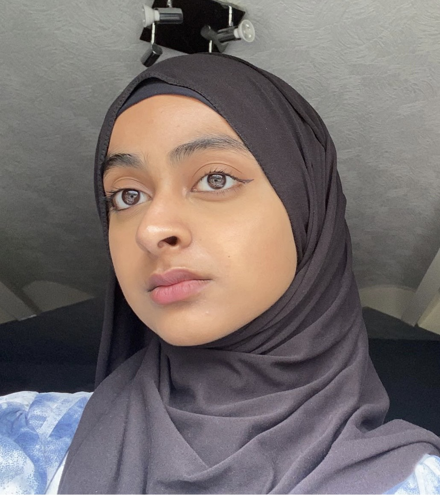

Aisha Adia
I am an individul who values curiosity and the pursuit of knowledge. With an ongoing passion for continuous learning, I thrive on exploring new ideas and embracing challenges by finding innvotive solutions. My diverse experiences have shaped ne into an open-minded,adaptable and compassionate individual.
A Quote to Remember
"Success is not final, failure is not fatal: it is the courage to continue that counts."- Winston Churchill